MalBuster
Analyze unknown malware samples detected by your SOC team.
Scenario
You are currently working as a Malware Reverse Engineer for your organization. Your team acts as a support for the SOC team when detections of unknown binaries occur. One of the SOC analysts triaged an alert triggered by binaries with unusual behavior. Your task is to analyze the binaries detected by your SOC team and provide enough information to assist them in remediating the threat.
Analysis Details
Q1: Based on the ARCHITECTURE of the binary, is malbuster_1 a 32-bit or a 64-bit application?
file malbuster_1
"malbuster_1: PE32 executable (GUI) Intel 80386, for MS Windows"
Explanation: The output indicates “PE32” and “80386”, confirming it is a 32-bit application.
Answer: 32-bit
Q2: What is the MD5 hash of malbuster_1?
pe-tree malbuster_1
(MD5 field)
Answer: 4348da65e4aeae6472c7f97d6dd8ad8f
Q3: Using the hash, what is the popular threat label of malbuster_1 according to VirusTotal?
Explanation: VirusTotal was used to search the MD5 hash, revealing the threat label.
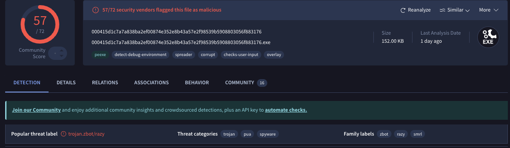
Answer: trojan.zbot/razy
Q4: Based on VirusTotal detection, what is the malware signature of malbuster_2 according to Avira?
Explanation: The MD5 of malbuster_2 was searched on VirusTotal to retrieve this signature.
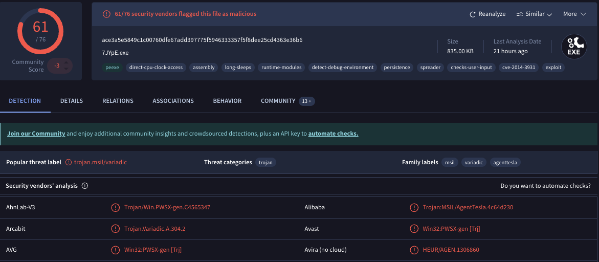
Answer: HEUR/AGEN.1306860
Q5: malbuster_2 imports the function _CorExeMain. From which DLL file does it import this function?
Explanation: This was identified in the IMAGE_NT_HEADERS → IMAGE_IMPORT_DESCRIPTOR using pe-tree.
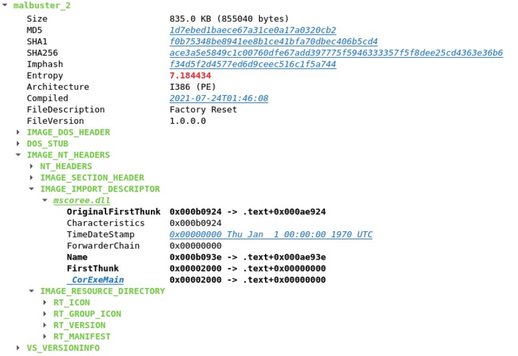
Answer: mscoree.dll
Q6: Based on the VS_VERSION_INFO header, what is the original name of malbuster_2?
Explanation: The original filename was retrieved from the VS_VERSION_INFO header.
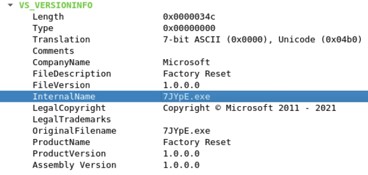
Answer: 7JYpE.exe
Q7: Using the hash of malbuster_3, what is its malware signature based on abuse.ch?
Explanation: A Google search using the hash along with abuse.ch returned this signature.
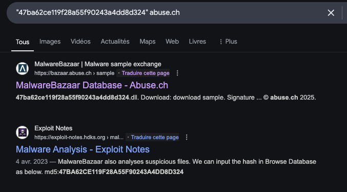
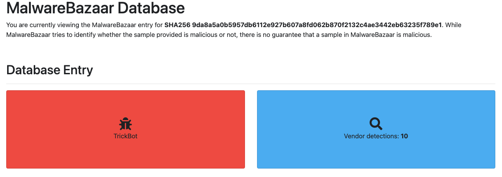
Answer: TrickBot
Q8: Using the hash of malbuster_4, what is its malware signature based on abuse.ch?
Explanation: Abuse.ch was queried similarly to reveal this signature.
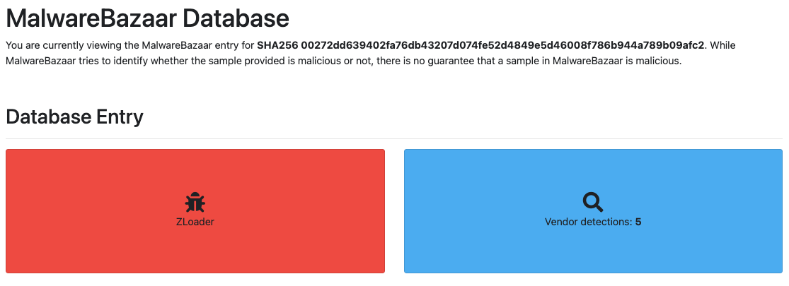
Answer: Zloader
Q9: What is the message found in the DOS_STUB of malbuster_4?
Explanation: The DOS_STUB in the pe-tree analysis contained this message.
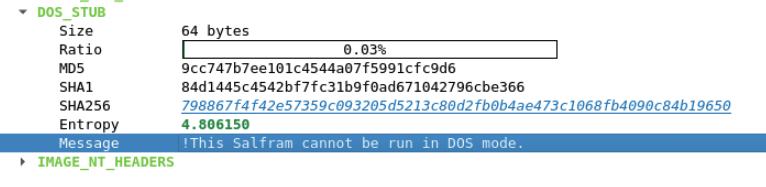
Answer: !This Salfram cannot be run in DOS mode.
Q10: malbuster_4 imports the function ShellExecuteA. From which DLL file does it import this function?
Explanation: This function import was found under IMAGE_IMPORT_DESCRIPTOR using pe-tree.
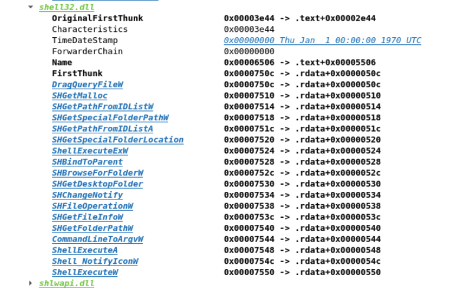
Answer: shell32.dll
Q11: Using capa, how many anti-VM instructions were identified in malbuster_1?
capa.exe -vv malbuster_1 > malbuster_1_vv
(anti-VM instructions: 3)
Explanation: The capa output confirmed the presence of 3 anti-VM instructions.
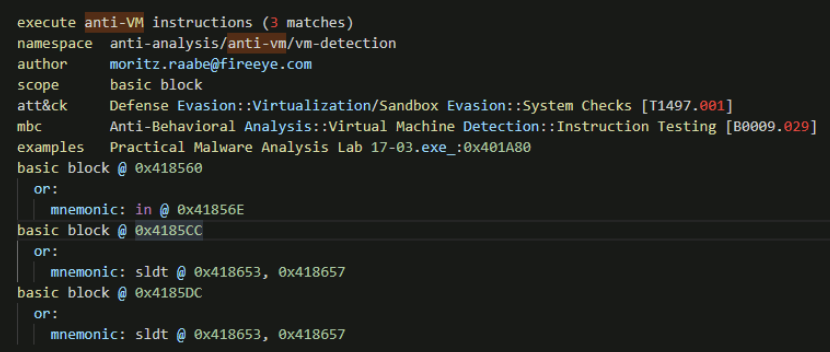
Answer: 3
Q12: Using capa, which binary can log keystrokes?
Explanation: Analysis with capa indicated that binary 3 is capable of logging keystrokes.
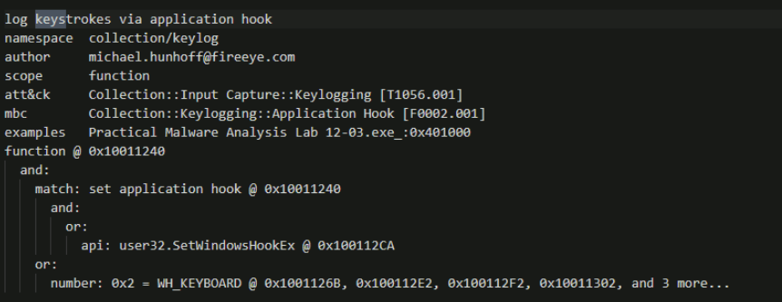
Answer: malbuster_3
Q13: Using capa, what is the MITRE ID of the DISCOVERY technique used by malbuster_4?
Explanation: The MITRE ID was identified from the capa output for malbuster_4.
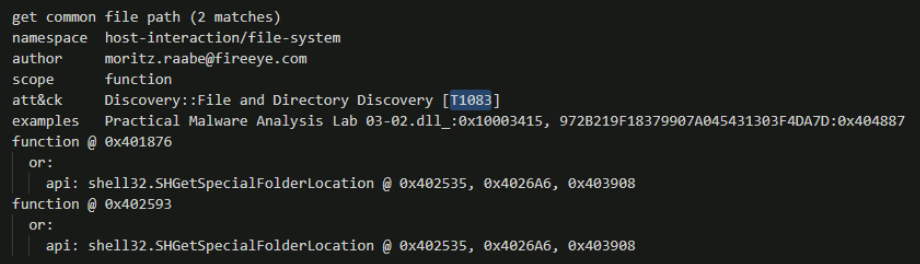
Answer: T1083
Q14: Which binary contains the string "GodMode"?
Answer: malbuster_2
Explanation: The string “GodMode” was found exclusively in malbuster_2.
Q15: Which binary contains the string "Mozilla/4.0 (compatible; MSIE 6.0; Windows NT 5.1; SV1)"?
Answer: malbuster_1
Explanation: This string was confirmed to be present in malbuster_1.